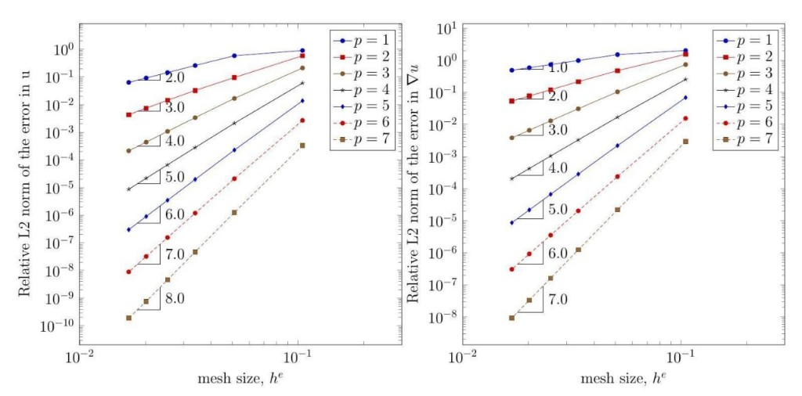
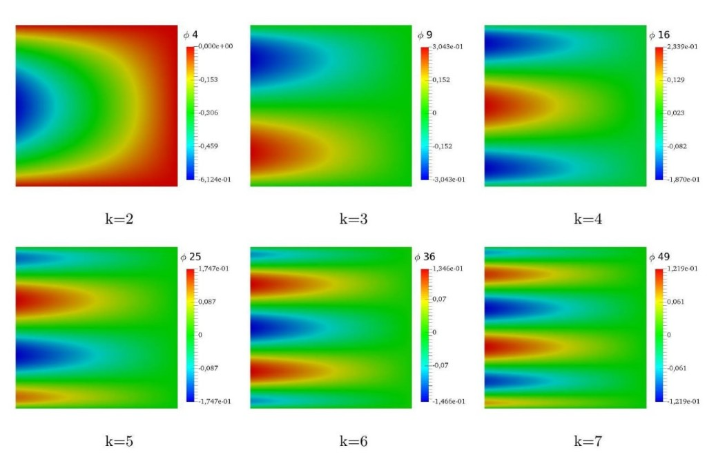

Vertex / edge
Vertex modes use only ℓ₀, ℓ₁. Edge modes put one factor at order k ≥ 2 and pin the transverse directions to a vertex factor so continuity lives on that edge alone.
Hierarchical Lobatto shape functions are the workhorse of the p-version. The viewer below evaluates the same 1-D library as a typical high-order code, then builds tensor-product modes in 1-D, 2-D, and 3-D — contours, warped surfaces, volume slices, and isosurfaces you can tune live.
Keep the polynomial degree fixed (usually p = 1 or 2) and refine the mesh size h. Algebraic rates follow: ‖u − uh‖L² = O(hp+1) and ‖∇(u − uh)‖ = O(hp) when the solution is smooth enough.
Keep the mesh, raise the degree. For analytic solutions the error decays exponentially in p. Near singularities an hp strategy — geometric refinement plus high order away from the tip — recovers exponential rates again.
The plots below show the classical algebraic rates on a sequence of meshes for p = 1…7. Steeper slopes at higher p are exactly the O(hp+1) and O(hp) predictions for the field and its gradient.

Convergence. Relative L² error in u (left) falls as O(hp+1); the gradient (right) as O(hp).
A naïve basis {1, ξ, ξ², …, ξp} on [−1, 1] becomes severely ill-conditioned as p grows. Integrated Legendre (Lobatto) polynomials vanish at the endpoints for k ≥ 2 and stay nearly orthogonal in the energy inner product, so hierarchical element matrices remain usable at high p.
Vertex modes use only ℓ₀, ℓ₁. Edge modes put one factor at order k ≥ 2 and pin the transverse directions to a vertex factor so continuity lives on that edge alone.
On a hexahedron a face mode has two high-order factors in the face plane and one vertex factor normal to the face — zero on the other five faces.
All free directions use k ≥ 2, so the mode vanishes on the entire boundary and can be statically condensed.
Diagonal bubbles ℓk(ξ) ℓk(η) for k = 2…7 from the original ParaView export — reproduce them in the viewer with dimension 2D, family Bubble, and i = j = k.

Interior bubbles. Blue / red opposite signs; green near zero. Every panel vanishes on all four edges.
Contours above match Šolín, Segeth & Doležel, Higher-Order Finite Element Methods, and the MATLAB Lobatto library used to write shFuncs.vtu.